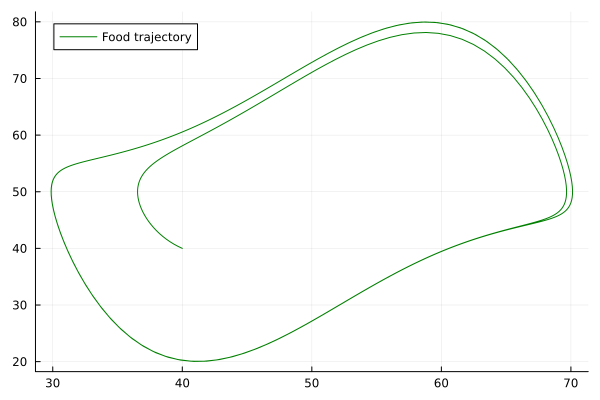

Tutorial
In this tutorial, we will:
- Create a hybrid simulation between an Agent-based model, defined in Agents.jl, and an ODE system defined through DifferentialEquations.jl.
- Introduce Mermaid Components for Agents.jl and DifferentialEquations.jl.
- Demonstrate how these Components can be connected together through Connectors.
- Solve the hybrid model.
- Visualise the results of the simulation.
This example will include a group of birds, flocking around some food at a single moving point, where the motion of the moving point is governed by an ODE system.
Components
To begin, we need to define our components. These will be an ODE model component for the movement of the food, and an Agent-based model component for the birds.
Differential Equations Components
To define the ODE model, let's have a look at how to define an ODE Component.
Mermaid.DEComponent — Type
DEComponent(model::DiffEqBase.AbstractDEProblem, alg;
name::String="DE", timestep::Float64=1.0, intkwargs::Tuple=(),
state_names::Dict{String,Any}=Dict{String,Any}())
DEComponent(model::DiffEqBase.AbstractDEProblem; kwargs...)A Mermaid component that wraps a SciML Differential Equations problem (ODEProblem, DAEProblem, etc).
Arguments
model::DiffEqBase.AbstractDEProblem: The SciML Differential Equations problem (e.g., ODEProblem, etc.)alg: Algorithm from DifferentialEquations.jl to be used for solving the DEProblem. If no algorithm is provided, the algorithm will be automatically chosen by DifferentialEquations.jl.
Keyword Arguments
name::AbstractString: Name of the component. Defaults to "DE".timestep::Real: Time step for the component. Defaults to 1.0.intkwargs: Additional keyword arguments for the DE solver. Defaults to no keywords.state_names: Dictionary mapping variable names (as strings) to their corresponding indices in the state vector or symbols from Symbolics.jl. Defaults to an empty dictionary. Map strings like "x" to indices (1, 2, ...) or symbolic variables.
Special Variables
#time: The current time (integrator.t).#state: The full state vector (integrator.u).#integrator: The underlying DifferentialEquations.jl integrator object.
Examples
function f!(du, u, p, t)
du[1] = -u[1]
end
prob = ODEProblem(f!, [1.0], (0.0, 10.0))
comp = DEComponent(prob, Tsit5(); name="ode_comp",
state_names=Dict("x" => 1))We see that we need to define an ODEProblem to use in the component, so let's create one.
using OrdinaryDiffEq
function food!(du, u, p, t)
x, y = u
d = 10.0
mu = 1.3
tau = 30.0
du[1] = (y - 50)/tau
du[2] = (mu * (1 - (x-50)^2/d^2)*(y-50) - (x-50))/tau
end
u0 = [40.0, 40.0]
tspan = (0.0, 500.0)
prob = ODEProblem(food!, u0, tspan)Next, we want to wrap this ODEProblem inside an DEComponent. For this, we will need to define the state_names field, and should generally provide a value for the name field (since component names in a hybrid simulation should be unique).
using Mermaid
comp1 = DEComponent(prob, Rodas5P();
name="food", state_names=Dict("x" => 1, "y" => 2),
)Agents.jl Components
Now that we have created our DEComponent, we can move on to the AgentsComponent, so let's have a look at its documentation.
Mermaid.AgentsComponent — Type
AgentsComponent(model::StandardABM; name="Agents Component",
state_names=Dict{String,Any}(), timestep::Real=1.0)A Mermaid component that wraps an agent-based model (ABM) using the Agents.jl package.
Arguments
model::StandardABM: The agent-based model to be solved.
Keyword Arguments
name::AbstractString: The name of the component. Defaults to "Agents".state_names: A dictionary mapping variable names (as strings) to their corresponding properties (agent properties or model properties) in themodel. Defaults to an empty dictionary. Values can be agent properties (accessed per agent) or model properties.timestep::Real=1: The time step for the component (not the ABM solver timestep), i.e. how frequently should the inputs and outputs be updated (in units ofabmtime(model)). For example, iftimestep=5, the component will step the ABM 5 times for every synchronization, and set #time=5.
Special Variables
#time: The component clock (independent fromabmtime(model)).#model: The currentStandardABMobject (read-only; usegetstatewithcopy=trueto get a copy).#ids: The vector of all current agent IDs (read-only; cannot be used withsetstate!).
state_names Semantics
- A key without a variable index accesses agent properties for all agents or model properties.
- A key with a variable index (e.g., `"comp.var[1:5]"") accesses specific agent IDs.
- Since the
variableindexis used for accessing the properties of particular agents, use a connector function to index into complex properties.
Examples
comp = AgentsComponent(model;
name="abm_comp",
state_names=Dict("x" => :pos_x, "y" => :pos_y))We can see that, again, we need to define the model (this time a StandardABM from Agents.jl), a name and a state_names.
using Agents, Random, LinearAlgebra
@agent struct Bird(ContinuousAgent{2, Float64})
const speed::Float64
const visual_distance::Float64
const turn_speed::Float64
end
function initialize_model(;
n_birds = 100,
speed = 1.0,
visual_distance = 15.0,
turn_speed = 0.04,
extent = (100, 100),
seed = 0
)
space2d = ContinuousSpace(extent)
rng = Random.MersenneTwister(seed)
props = Dict(:food_x => rand() * extent[1],
:food_y => rand()*extent[2])
model = StandardABM(
Bird, space2d; rng, agent_step!, container = Vector, properties = props)
for _ in 1:n_birds
vel = rand(abmrng(model), SVector{2}) * 2 .- 1
add_agent!(
model,
vel,
speed,
visual_distance,
turn_speed
)
end
return model
end
function agent_step!(bird, model)
heading = get_direction(bird.pos, (model.food_x, model.food_y), model)
if sum(heading .^ 2) < bird.visual_distance^2
# Bird can see food so should head towards food
bird.vel += bird.turn_speed * heading
else
# Bird can't see food so should turn towards nearest bird
nearest_bird = nearest_neighbor(bird, model, bird.visual_distance)
if !isnothing(nearest_bird)
heading = get_direction(bird.pos, nearest_bird.pos, model)
else
heading = (0, 0)
end
bird.vel += bird.turn_speed * (heading .+ randn(abmrng(model), SVector{2}))
end
bird.vel /= norm(bird.vel)
return move_agent!(bird, model, bird.speed)
end
model = initialize_model()
comp2 = AgentsComponent(model;
name = "birds", state_names = Dict("x" => :food_x, "y" => :food_y)
)AgentsComponent{StandardABM{ContinuousSpace{2, true, Float64, typeof(Agents.no_vel_update)}, Main.Bird, Vector{Main.Bird}, Tuple{DataType}, typeof(Main.agent_step!), typeof(dummystep), typeof(Agents.Schedulers.fastest), Dict{Symbol, Float64}, Random.MersenneTwister}, String, Dict{String, Symbol}, Int64}(StandardABM with 100 agents of type Bird
agents container: Vector
space: periodic continuous space with [100.0, 100.0] extent and spacing=5.0
scheduler: fastest
properties: food_y, food_x, "birds", Dict("x" => :food_x, "y" => :food_y), 1)Connections
We can now set up the connections between the variables in the two components.
Mermaid.Connector — Type
Connector <: AbstractConnectorRepresents a connection between multiple ConnectedVariables, possibly with a transformation function.
Fields
inputs::Vector{<:AbstractConnectedVariable}: Input variables for the connector.outputs::Vector{<:AbstractConnectedVariable}: Output variables for the connector.func::Union{Nothing,Function}: Optional function to transform inputs to outputs.
The format for specifying a ConnectedVariable is given in Mermaid Interface, but in its simplest form, it is a string containing a component name and a variable/state name.
conn1 = Connector(inputs=["food.x"], outputs=["birds.x"])
conn2 = Connector(inputs=["food.y"], outputs=["birds.y"])Connector(ConnectedVariable[ConnectedVariable{SubString{String}, SubString{String}, Nothing, Nothing}("food", "y", nothing, nothing)], ConnectedVariable[ConnectedVariable{SubString{String}, SubString{String}, Nothing, Nothing}("birds", "y", nothing, nothing)], nothing)Solving the hybrid model
To create the hybrid model, we need to create a MermaidProblem. We can then solve this using the CommonSolve interface.
Mermaid.MermaidProblem — Type
MermaidProblem <: AbstractMermaidProblem
MermaidProblem(;
components::Vector{AbstractComponent},
connectors::Vector{AbstractConnector},
tspan::Tuple{Float64, Float64},
timescales::Vector{Float64}=ones(length(components)))Defines a Mermaid hybrid simulation problem.
Keyword Arguments
components::Vector{<:AbstractComponent}: Vector of Components. Order is significant because it determines stepping order when multiple components can be stepped together. Component names must be unique.connectors::Vector{<:AbstractConnector}: Vector of Connectors. Order is significant; connectors are applied in order, and later connectors can observe changes made by earlier ones.tspan::Tuple{Float64, Float64}: The time span of the simulation, from start to end time.timescales::Vector{Float64}=ones(length(components)): Timescales for each component. For componenti, global time is computed ast_global[i] = timescales[i] * t_local[i]. A component with timescale 0.1 advances ten local time units per one global time unit. This allows components using different time units to be connected in a single simulation.
Notes on Ordering
componentsorder determines stepping priority when multiple components are ready.connectorsorder is critical. Connectors are applied before component steps, in the order given. A connector is eligible only when every input is no later than every output in global time. Later connectors see changes made by earlier connectors. This is particularly important for setting#idsand#init_statesin a DuplicatedComponent.
mp = MermaidProblem(components=[comp1, comp2], connectors=[conn1, conn2], tspan=tspan)
alg = MinimumTimeStepper()
sol = solve(mp, alg)MermaidSolution{Vector{Any}, Dict{Any, Any}}(Any[0.0, 1.0, 2.0, 3.0, 4.0, 5.0, 6.0, 7.0, 8.0, 9.0 … 491.0, 492.0, 493.0, 494.0, 495.0, 496.0, 497.0, 498.0, 499.0, 500.0], Dict{Any, Any}(ConnectedVariable{SubString{String}, SubString{String}, Nothing, Nothing}("birds", "y", nothing, nothing) => Any[6.8545824386515015, 40.0, 40.35292595605502, 40.74321873658098, 41.167758505369584, 41.62297054628376, 42.10492273852508, 42.60943343265743, 43.13218412988554, 43.668831330712315 … 79.91329041647701, 79.58294870741794, 78.95785700107429, 78.0347500272643, 76.82501248918557, 75.35481093258157, 73.66352151201765, 71.80061374124578, 69.82146565241591, 67.78278428038142], ConnectedVariable{SubString{String}, SubString{String}, Nothing, Nothing}("food", "x", nothing, nothing) => Any[40.0, 39.67244109021822, 39.357277117242305, 39.055703030964466, 38.76880195388508, 38.49753160657571, 38.242714170867806, 38.00502984480508, 37.785014155017464, 37.58305891009925 … 60.482188462778886, 61.458699025964464, 62.40939548797823, 63.32449201743789, 64.19483063136816, 65.01235240733412, 65.77048963419377, 66.4644346015335, 67.09126031599506, 67.64989182574992], ConnectedVariable{SubString{String}, SubString{String}, Nothing, Nothing}("birds", "x", nothing, nothing) => Any[40.56994708920292, 40.0, 39.67244109021822, 39.357277117242305, 39.055703030964466, 38.76880195388508, 38.49753160657571, 38.242714170867806, 38.00502984480508, 37.785014155017464 … 59.48978229702783, 60.482188462778886, 61.458699025964464, 62.40939548797823, 63.32449201743789, 64.19483063136816, 65.01235240733412, 65.77048963419377, 66.4644346015335, 67.09126031599506], ConnectedVariable{SubString{String}, SubString{String}, Nothing, Nothing}("food", "y", nothing, nothing) => Any[40.0, 40.35292595605502, 40.74321873658098, 41.167758505369584, 41.62297054628376, 42.10492273852508, 42.60943343265743, 43.13218412988554, 43.668831330712315, 44.215112331977664 … 79.58294870741794, 78.95785700107429, 78.0347500272643, 76.82501248918557, 75.35481093258157, 73.66352151201765, 71.80061374124578, 69.82146565241591, 67.78278428038142, 65.73833094614724]))Plotting the solution
After running solve, we get sol, a MermaidSolution instance. This stores all variables given in state_names at each timepoint.
Mermaid.MermaidSolution — Type
MermaidSolution{X, Y} <: AbstractMermaidSolutionStores the solution of a MermaidProblem over time.
Fields
t::X: Time points at which the solution is saved.u::Y: Dictionary mapping variables to their solution arrays.
Interpolation
A solution can be interpolated at arbitrary times using callable syntax:
(sol::AbstractMermaidSolution)(t::Real)This returns a new MermaidSolution with interpolated states at time t.
Interpolation Rules:
- For numeric states and numeric arrays: Uses linear interpolation between saved time points.
- For non-numeric states (e.g., Agents.jl models, objects): Uses constant interpolation (returns the state from the last saved time point before or at
t).
The time t must be within [sol.t[1], sol.t[end]], otherwise a BoundsError is thrown.
Examples
sol(2.5) # Interpolate solution at time t=2.5using Plots
plot(sol["food.x"], sol["food.y"], color=:green, label="Food trajectory")
Advanced Visualisations
While we can plot the variables from the ODE component easily, the Agent-based model is a bit more challenging. By default, we only store the variables given in state_names in the solution. This can be changed by providing save_vars=["birds.#model"] to solve, in which case the full agent-based model state will be visible in the solution at all time points.
"#model" is a special variable for AgentsComponents. Special variables, denoted by starting with # are not saved by default but can be used with connectors, getstate, setstate!, or save_vars. To view the special variables of a component, you can call variables(component).
However, this can be wasteful if we know we only want an animation of the model (which can be generated during simulation). We will set up a Connector which takes an input of the model's current state, and instead of a transformation, we will use a function which adds the current state to a video.
using CairoMakie
const bird_polygon = Makie.Polygon(Point2f[(-1, -1), (2, 0), (-1, 1)])
function bird_marker(b::Bird)
φ = atan(b.vel[2], b.vel[1]) #+ π/2 + π
return rotate_polygon(bird_polygon, φ)
end
fig, ax = abmplot(model; agent_marker = bird_marker)
CairoMakie.scatter!(ax, [model.food_x], [model.food_y], markersize = 35, color = :green)
io = VideoStream(fig)
function plot_input(model)
empty!(ax)
abmplot!(
ax, model; agent_marker = bird_marker)
CairoMakie.scatter!(ax, [model.food_x], [model.food_y], markersize = 35, color = :green)
recordframe!(io)
end
conn3 = Connector(
inputs = ["birds.#model"],
outputs = Vector{String}(),
func = (model) -> plot_input(model)
)
mp = MermaidProblem(components = [comp1, comp2], connectors = [conn1, conn2, conn3], tspan = tspan)
sol = solve(mp, alg)
save("birds.mp4", io)